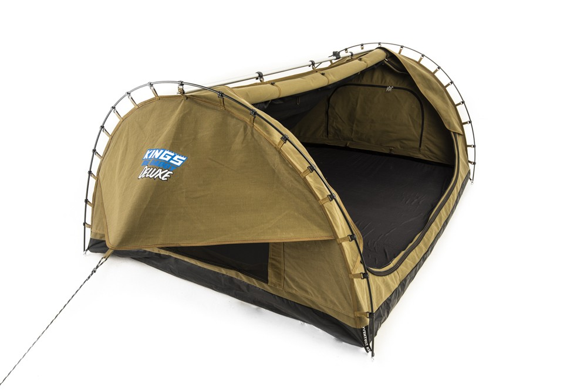

Valspir Blog
Header (irish)
Header (japanese)
Header (manx)
Header (spanish)
Valspir is a game development group working on text based games, nothing huge but it's a learning experience for us. You can keep track of progress through this blog page
The name "Valspir" was used as my username for a few years before it became the name of our group. I registered the domain valspir.com originally as a recreational website in 2017 (Possibly earlier/later), it was inactive for a few months until it rested as a social media project I was creating, it didn't do anything special.
Valspir History (26/8/19)
Valspir is a game development group working on text based games, nothing huge but it's a learning experience for us. You can keep track of progress through this blog page
The name "Valspir" was used as my username for a few years before it became the name of our group. I registered the domain valspir.com originally as a recreational website in 2017 (Possibly earlier/later), it was inactive for a few months until it rested as a social media project I was creating, it didn't do anything special.
Previous Projects (26/8/19)
The social media website was in development (basically sitting on my computer, hosted on my shitty wifi with no changes made for weeks at a time) until it became inactive again. The domain ran out 2 years after I originally purchased it, then it sat unregistered for about a year, until I had it reregistered with the help of one of the other members of Valspir.
Shadows and Souls (26/8/19)
The domain was reregistered after I created my first game (Shadows and Souls, formerly Zork IV), I really enjoyed creating it but I wanted a bigger group (I originally had 2 other people, as it was for a school assignment), so I approached some of my friends with the idea of a game development group. We improved on my terrible code in Shadows and Souls, and started working on Shadows and Souls 2: Sins Unite, this game was similar to the original, but with one big difference, multiplayer, and I'm not talking local multiplayer, I wanted to make an online text-based game, I didn't know if anyone had done it before (I assumed people have, cause it is a pretty simple idea), but I wanted to try.
Shadows and Souls 2 Development (26/8/19 - Current Day)
The biggest issue I have been facing is the online segment of the game, I am using sockets to send and receive the game data, but the client just acts as a husk for the server to control. I was able to get multiple connections working at a time, but I don't know what I did because now the code only allows one person at a time. The code breaking combined with Google Chrome corrupting my MacBook's hard drive is making this hell. I have a copy of the code on a USB, but I don't have access to it for a few weeks. The code on the USB works afaik, so that could be really helpful. Hopefully I will have a working server soon.
The game servers are probably going to be hosted through Amazon AWS, as they are the best solution I can think of at the moment
I'm writing the code for this game in a small tent, my family is camping and I didn't want to stop working on the game, I can't sit up properly because it is designed for sleeping in only (A photo of the tent is below). The code of the game is an absolute mess, it isn't easy to read, and half of it is commented out, I'll fix all of those issues when I get the basic code working, but I want to continue the development for this game for as long as I can. We plan to make a third version of the game (I know, finish the version I am on first), this version will hopefully have 3D (? Possibly) graphics, if not 3D, then at least some graphics.

Text (japanese)
Text (irish)
Text (manx)
Test (spanish)